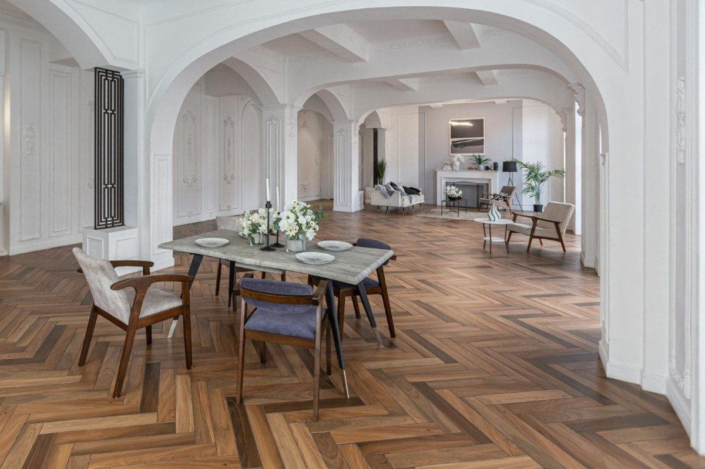
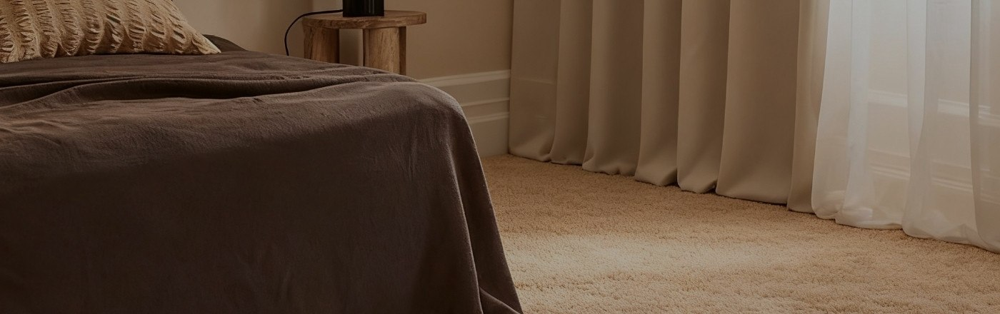
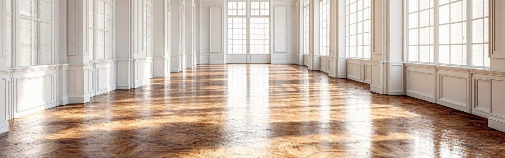
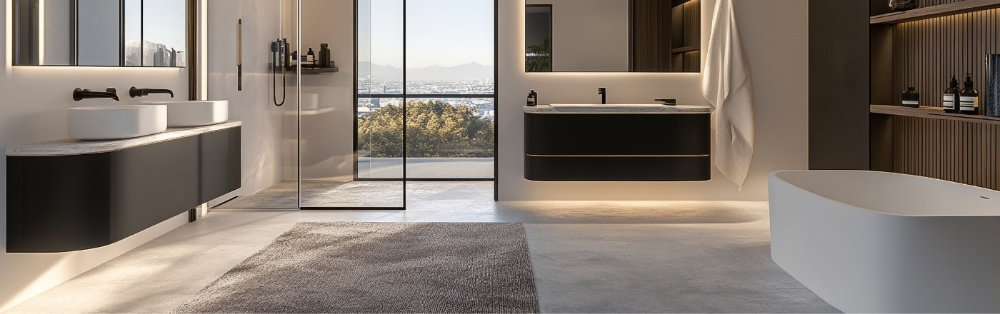

Material & inspiration
Vad vill du
sätta fötterna på?
Utforska materialen, uttrycken och möjligheterna. Bilderna är inspiration – i butiken kan du jämföra riktiga prover.
Trä. Med liv i varje bräda.
Ådring, format och läggningsmönster ger rummet karaktär. Vi hjälper dig att jämföra parkett och olika uttryck – eller se om ditt befintliga golv kan slipas.
Mjukt. Lugnt. Hemma.
Ett textilgolv förändrar både känslan under fötterna och rummets uttryck. I butiken hjälper vi dig att jämföra struktur, färg och material för rätt miljö.
Ett golv för din vardag.
Utforska olika träuttryck och format i vinyl och laminat. Vi går igenom hur rummet används och hjälper dig att hitta alternativ som passar.
Ett rum att landa i.
Kakel, klinker och våtrumsmattor. Se materialen tillsammans och låt oss hjälpa dig med både valen och vad som behöver göras i ditt badrum.

Golvinspiration · fiskbensparkett
Materialinspiration · textilgolv
Inspiration för golvets uttryck · jämför material i butik
BadrumsinspirationTa med hela rummet
Golv och väggar
hör ihop.
Vi hjälper dig jämföra kulörer, tapeter och golv så att materialen fungerar tillsammans.


Ditt nästa steg
Kom in och
känn skillnaden.
Vi hjälper dig att ta nästa steg. Ring oss eller beskriv ditt projekt i ett mejl.